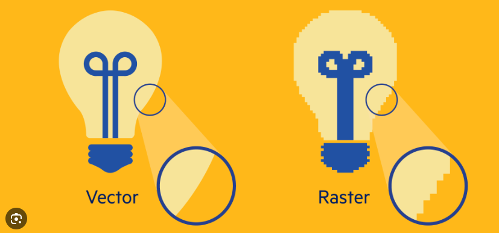

Canvas je HTML5 element koji, pomoću JavaScript-a, omogućava dinamičko iscrtavanje
različitih oblika, dodavanje slika, kreiranje animacija na web stranici i sl.
Na platnu (canvas-u) to ne radimo korištenjem novog jezika (kao što je to slučaj kod SVG) ili
korištenjem Flasha. Najčešće uporabe platna su:
SVG (Scalable Vector Graphics) grafika ne gubi kvalitetu prilikom zumiranja ili resize-a.
Svi crteži mogu biti interaktivni i dinamički. Svaki element i atribut SVG datoteke može biti
animiran. Animacije mogu biti definirane i pokrenute interaktivno ili pomoću skripti.
SVG integrira druge W3C standarde kao što su DOM, XSL …
| SVG | HTML Canvas |
|---|---|
| SVG ima bolju skalabilnost, tako da može imati bolje slike sa velikom kvalitetom na bilo kojoj rezoluciji | Canvas ima lošu skalabilnost. Nije prikladan za rad s velkim rezolucijama |
| SVG daje bolje performanse sa manjim brojem objekata ili većom površinom | Canvas daje bolje performanse za rad sa manjim površinama ili većim brojem objekata |
| SVG se može modificirati uz pomoć skripte i CSS-a | Canvas se može modificirati samo uz pomoć skripte |
| SVG je baziran na vektorima i sastavljen je od oblika | Canvas je baziran na pixelima |
| Ime | Marko |
|---|---|
| Telefon | 555-1234 |
| Telefon | 555-8745 |
